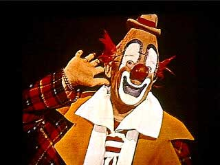
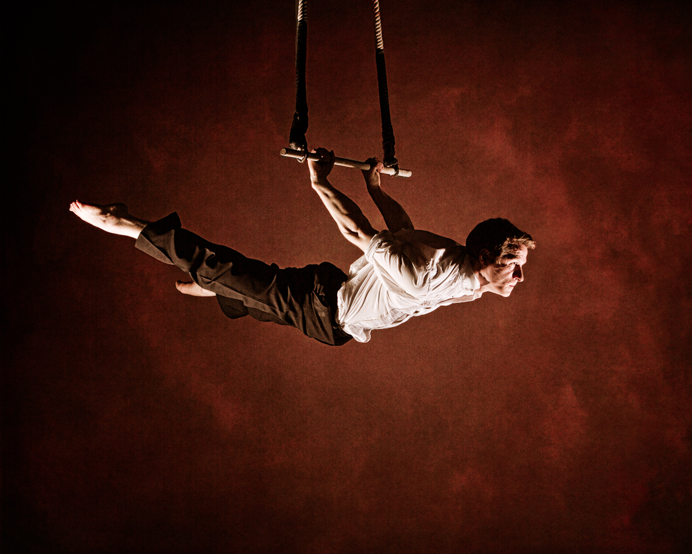
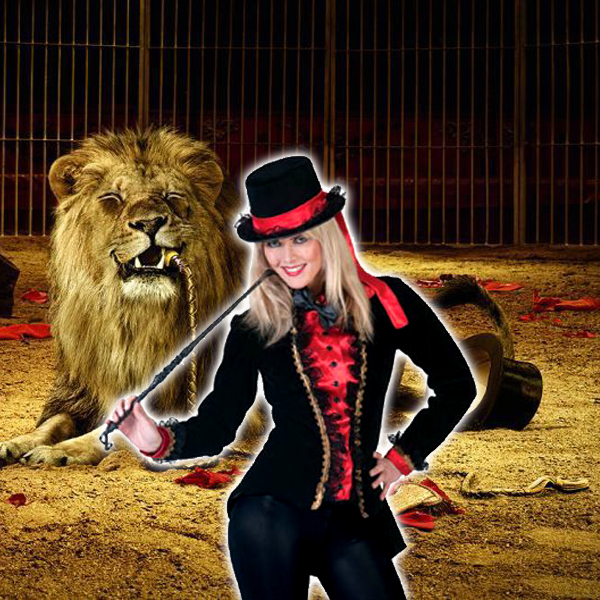

Welcome !
Since 1982, the Wild circus grew up and is known throughout the world. Michael Watson, founder of the circus is still with the orders at 72 years old.
The principal performances are described more in details in the list of links on the right of your screen. Wild Circus passes in all the big cities of the world, from Europe in the United States via the continent of Asia, you will be able to benefit from our incredible shows!
Performance :
PROGRAM

Our incredible presentation will start with the show of Jacco, with its new sketch surprised. Followed by some pirouettes on its monocycle, and it will manufacture you also several different animals with its funny balloons! We will be following with Marcel,
who will make vibrate the whole public on his trapezoids. And to finish in beauty, one moment of suspense with Lady Lion who will leave you mouth bay with her majestic lions.
 JACCO : Jacco, comic since always makes a great effort all to make us laugh. Each week he imagines new parodies as well as new funny turns! A real comic as they are liked. Its characteristic is to mix pirouettes with comedy! |
 MARCEL : Having begun the circus at the age of 5ans, Marcel is recognized today in the whole world for his pirouettes and his sensational numbers of stunt-flying! With more than 20 meters in height, it will make undoubtedly sweat the public! |
 LADY LION : Lady Lion is incontestably the largest lion tamer in the world Born with them, she passes her whole life by their side. It is its family, and it is proud to introduce to you her children Pepper, Meep and well of others! |